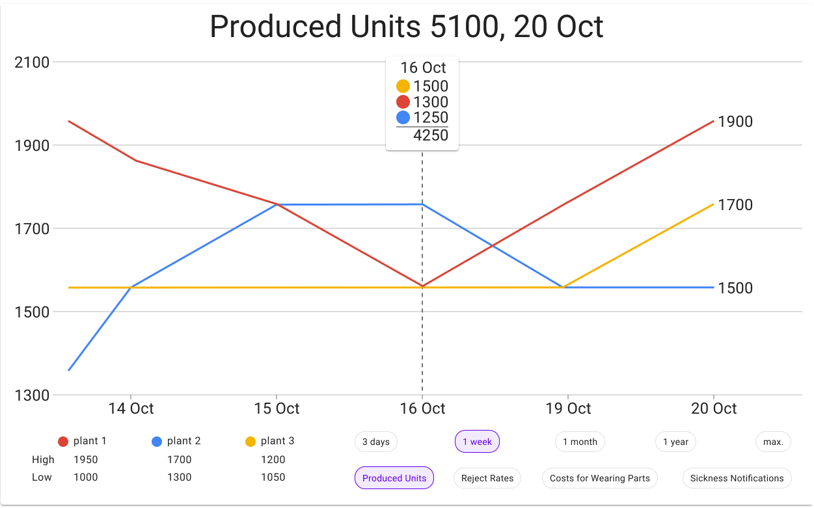

×

The Wallet Project
A run through the full Design Thinking circle.
Initial GUI Prototyping
Create a GUI based on a briefing with a client.
Responsive Design Challenge
Create a tablet and smartwatch version of the developed GUI.

Design Transformation Challenge
Align one of the developed GUIs with Googles material design guidelines.
Prototype Voice User Interface
Draft a VUI prototype for an everday interaction.
VUI Prototype
Implement the desinged VUI.
A-B Test
Conduct an A-B test comparing two GUIs.
Physical Computing with Drawn, Organic Electronics
Create a working prototype of a drawn, interactive system.